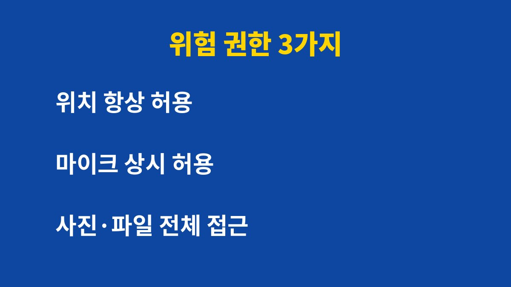
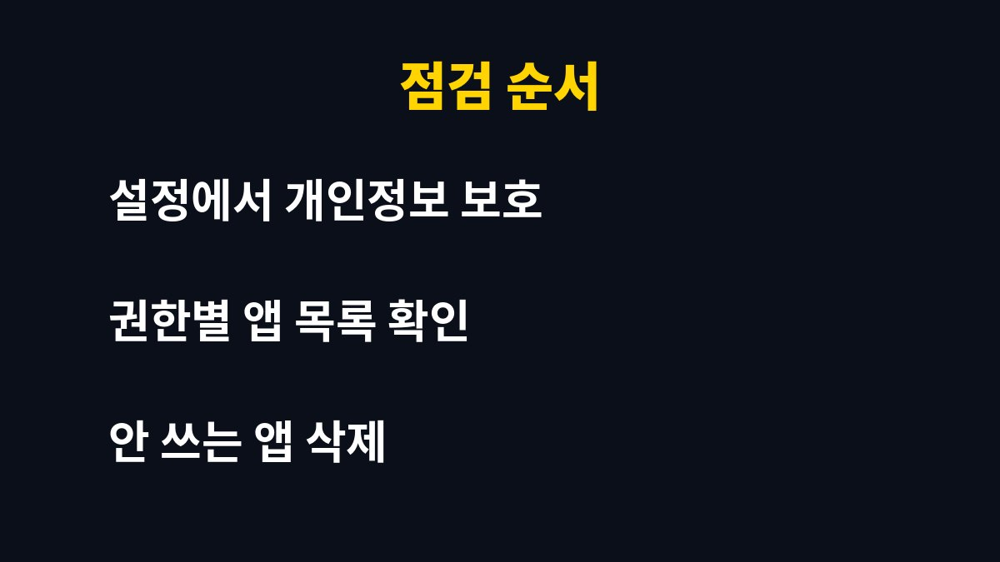

앱 권한을 한 번도 점검하지 않았다면 위치, 마이크, 사진 접근 3가지부터 확인해야 한다. 스마트폰을 쓰는 사람이라면 누구나 해당되는 이야기다.
그런데 권한을 반드시 다 끄면 오히려 앱이 제대로 작동하지 않을 수 있다. 어떤 권한을 끄고 어떤 권한을 남겨야 하는지는 아래에 있다.
앱 권한, 왜 지금 당장 점검해야 할까?
앱을 설치할 때 무심코 '허용'을 눌러 온 사람이 많다. 한 번 허용한 권한은 사용자가 직접 끄기 전까지 계속 유지되는 경우가 대부분이다. 몇 년 전에 설치하고 잊어버린 앱도 여전히 위치와 사진에 접근할 수 있다는 뜻이다.
문제는 앱이 정상적으로 운영되는 경우에도 필요 이상의 정보를 수집할 수 있다는 점이다. 해킹이나 유출 사고가 났을 때 앱이 가진 권한이 많을수록 피해 범위도 넓어진다. 권한을 줄이는 것만으로도 피해 가능성을 낮출 수 있다.
끄기만 해도 달라지는 위험 권한 3가지는?
첫째는 위치 권한이다. 지도, 배달, 날씨 앱처럼 위치가 꼭 필요한 앱이 아니라면 '항상 허용'을 '앱 사용 중에만 허용'으로 바꾸는 것이 좋다. 항상 허용 상태에서는 앱을 켜지 않아도 이동 경로가 쌓일 수 있다.

둘째는 마이크와 카메라 권한이다. 통화, 녹음, 촬영 기능이 없는 앱이 요구한다면 이유를 의심해 볼 필요가 있다. 사용할 때만 허용하거나 아예 거부해도 대부분의 앱은 문제없이 작동한다.
셋째는 사진과 파일 전체 접근 권한이다. 갤러리에는 신분증 사진, 영수증, 가족 사진처럼 민감한 자료가 섞여 있다. 필요한 사진만 선택해서 보여주는 '선택한 사진만 허용' 옵션이 있다면 그쪽을 고르는 것이 안전하다.
| 권한 | 권장 설정 | 예외 |
|---|
| 위치 | 앱 사용 중에만 허용 | 지도·내비게이션 |
| 마이크·카메라 | 사용할 때만 허용 | 통화·촬영 앱 |
| 사진·파일 | 선택한 항목만 허용 | 백업·편집 앱 |
점검은 어떻게 하면 5분 만에 끝낼 수 있을까?
방법은 간단하다. 설정에서 개인정보 보호 또는 앱 권한 메뉴로 들어가면 권한별로 어떤 앱이 접근 중인지 한눈에 볼 수 있다. 아이폰은 설정의 개인정보 보호 및 보안, 갤럭시는 설정의 보안 및 개인정보 보호에서 확인할 수 있다. 기종과 운영체제 버전에 따라 메뉴 이름은 조금 다를 수 있다.

권한별 목록에서 최근 쓰지 않는 앱을 먼저 골라내는 것이 순서다. 한 달 이상 열지 않은 앱은 권한을 끄는 데서 그치지 말고 아예 삭제하는 편이 낫다. 삭제한 뒤 필요해지면 다시 설치하면 그만이다.
앱 권한 3개, 5분 점검 순서
스마트폰을 쓴다면 아래 순서로 지금 확인해 둔다. 미루면 결국 후회하게 된다.
- 설정 > 개인정보 보호 > 권한 관리자를 연다.
- 위치 '항상 허용' 앱을 '사용 중에만'으로 바꾼다.
- 마이크 권한을 가진 앱 중 필요 없는 앱은 끈다.
- 카메라·사진 권한도 같은 기준으로 정리한다.
- 오래 안 쓴 앱은 삭제한다.
흔한 실수는 권한 요청 창을 읽지 않고 바로 허용을 누르는 것이다.
손전등처럼 단순한 앱이 연락처나 위치를 달라고 하면 그 자체로 의심해 볼 만하다.
또 앱을 업데이트하면 권한 요청이 다시 생길 수 있어서 한 번 정리로 끝나지 않는다.
상단에 마이크나 카메라 사용 표시가 뜨는데 쓰고 있지 않다면 바로 확인한다.
앱 권한은 꺼도 필요할 때 다시 켤 수 있다.
한 달에 한 번 점검하면 관리가 어렵지 않다.
정리한 날짜를 달력에 적어 두면 다음 점검을 잊지 않는다.
가족 폰도 같은 기준으로 함께 정리해 준다.
권한을 꺼도 괜찮은 앱과 켜둬야 하는 앱은 어떻게 구분할까?
기준은 기능과 권한이 연결되는지 여부다. 사진 편집 앱이 사진 접근을 요구하는 것은 자연스럽지만, 계산기 앱이 위치를 요구하는 것은 이상하다. 기능과 상관없는 권한을 요구한다면 꺼도 되고, 꺼서 문제가 생기면 그때 다시 켜면 된다.
또한 앱 업데이트 후 권한이 새로 추가되는 경우도 있다. 한 번 정리했더라도 몇 달에 한 번은 다시 확인하는 습관을 들이는 것이 좋다. 알림에 뜨는 권한 요청은 내용을 읽고 필요할 때만 허용하는 것이 기본이다.
오늘 5분만 투자해서 권한을 정리해 두면 이후의 불안이 크게 줄어든다. 도움이 되었다면 구독으로 다음 생활 IT 정보도 받아보는 것이 좋다.
기사·공식 발표 기준이며 출시·가격 정보는 바뀔 수 있다.